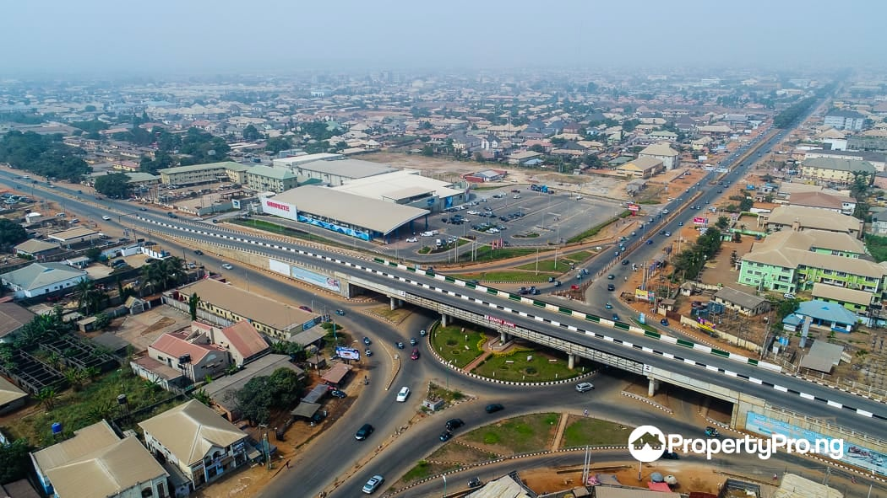

Shadrack Erhiaganoma | WDD 130
Hello! My name is Shadrack Erhiaganoma Ekavana and I am from Nigeria, Delta State.
I love playing soccer, singing, and dancing.
I am 5'11ft tall and weight 65kg and
I am happy to be here at BYU IDAHO.
Delta State, Nigeria
Delta State is a state in the South-South geopolitical zone of Nigeria. Named after the Niger Delta—a large part of which is in the
state—the state was formed from the former Bendel State, on 27 August 1991. Bordered on the north by Edo State, the east by Anambra and Rivers states,
and that south by Bayelsa State while to the west is the Bight of Benin which covers about 160 kilometres of the state's coastline.